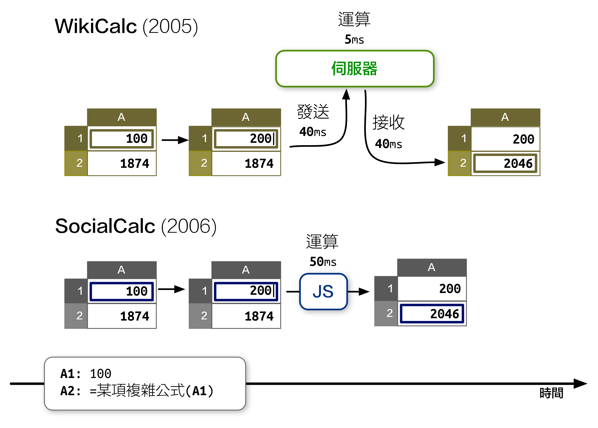
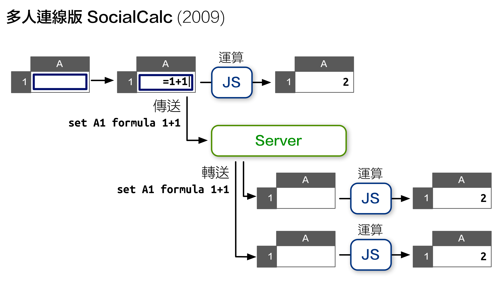
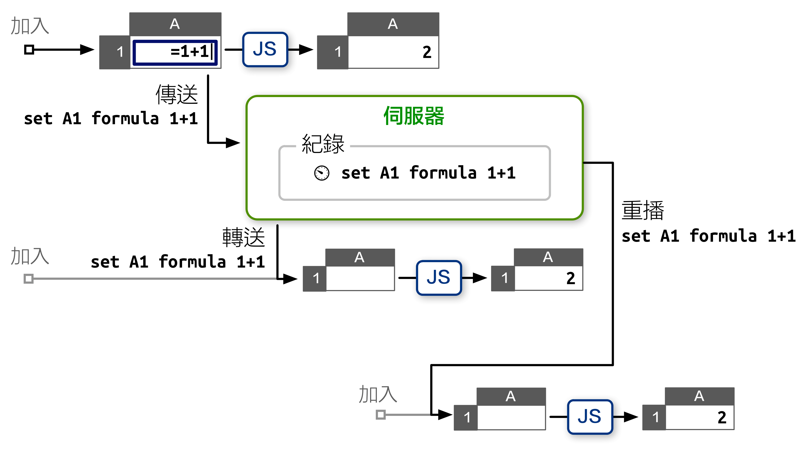
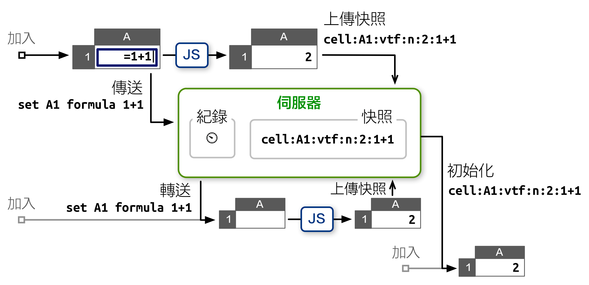
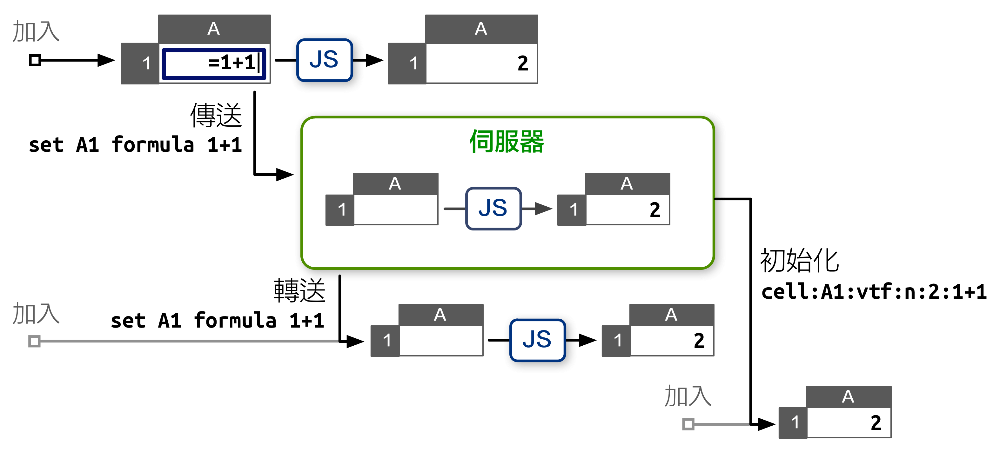
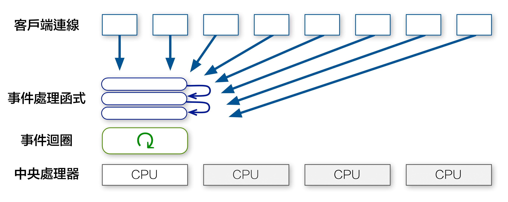
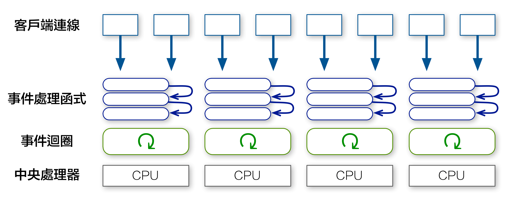
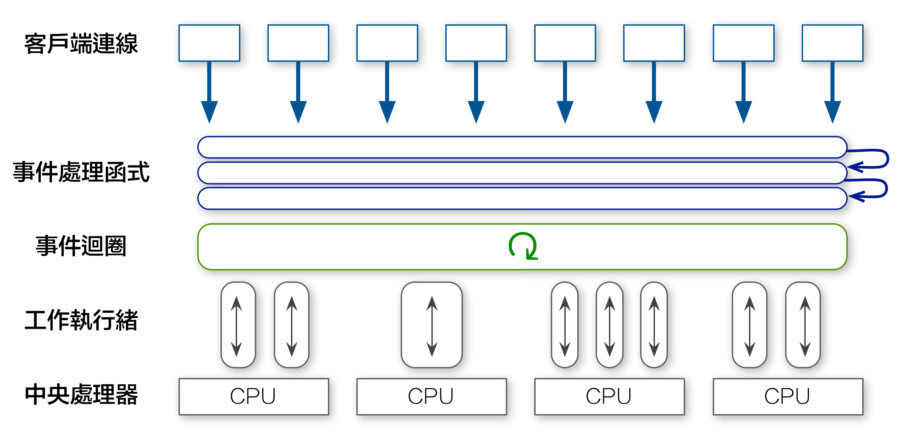

EtherCalc
即時協作試算表

安裝
npm install ethercalc ./node_modules/ethercalc/bin/ethercalc
sudo
加上 npm install -g
參數來安裝： npm install -g ethercalc ethercalc
簡報
- 下載 Keynote 簡報檔 (15MB)
- 下載 QuickTime 影片 (58MB)
- 下載 PDF 簡報檔 (20MB)
- 線上瀏覽 PDF 簡報檔 (SlideShare)
Slides
- Download Keynote slides (15MB)
- Download OpenDocument slides (15MB)
- Download PDF slides (20MB)
- View PDF slides online (SlideShare)
系統架構
緣起
- 每位使用者都需要安裝特定版本的試算表編輯器。
- 電子郵件往來、共享文件夾，或安裝一套專用的版本控制系統，都會增加額外的管理成本。
- 變動追蹤功能非常有限；舉例來說，Excel 無法對格式和單元格注釋內容的變動保留歷史記錄。
- 更新模板中的格式或公式後，還需對使用該公式的所有試算表文件進行更繁瑣的手工更新。
WikiCalc
- 純文字、HTML，以及共筆式的文本標記支援。
- 共筆文字包含插入鏈接、圖片，以及和從儲存格引用值的功能。
- 公式儲存格可以引用放在其他網站的 WikiCalc 網頁裡的值。
- 支援輸出到靜態網頁，以及將動態資料內嵌至其他網頁。
- 儲存格能使用 CSS 來改變樣式。
- 記錄所有編輯操作，以供稽核紀錄。
- 和共筆系統一樣，保留每一個版本，並可以隨時回復。
<table> 元素呈現；編輯儲存格時，瀏覽器會發送一個 ajaxsetcell 指令到伺服器，然後伺服器告訴瀏覽器哪個儲存格需要更新。<table> 元素與試算表有著相同大小，一個 100x100 試算表會在 DOM 裡創建上萬個 <td> 元素，大量消耗瀏覽器的記憶資源，進一步限制頁面的大小。- 處理十萬個儲存格的能力。
- 進行編輯操作時提供快速回應。
- 客戶端的稽核紀錄和還原/重作支援。
- 善用 JavaScript 和 CSS ，提供完整的視覺呈現功能。
- 用 JavaScript 提昇效能，並加強對各種不同瀏覽器的支援。
SocialCalc
- Sheet 是資料模型，代表試算表在記憶體中的結構。
模型中包含從座標指向 Cell 物件的字典，每個物件代表一個儲存格。空儲存格所在的座標不需要有對映的物件，因此完全不占用記憶體。
- Cell 代表儲存格的內容和格式。
下面列出的是一些常見的 Cell 物件屬性：
datatype t datavalue 1Q84 color black bgcolor white font italic bold 12pt Ubuntu comment Ichi-Kyu-Hachi-Yon - RenderContext 用於實現視圖，需要負責將表格繪製為相應的 DOM 物件。
- TableControl 則是主控制器，負責接收滑鼠和鍵盤事件。
在接收到視圖事件，例如滾動和調整大小後，就會對相關 RenderContext 物件進行更新。如果收到應用於試算表內容的更新事件，則會在試算表的指令佇列中加入新的指令。
- SpreadSheetControl 負責繪制頂層界面，包括工具欄、狀態欄、對話框，以及顏色選擇器。
- SpreadSheetViewer 是另一套頂層界面，主要提供唯讀的互動視圖。
SocialCalc.* 名稱空間裡，以避免命名衝突。ScheduleSheetCommands 方法進行，因此需要通過指令字串來代表編輯操作。常用的指令如下： set sheet defaultcolor blue
set A width 100
set A1 value n 42
set A2 text t Hello
set A3 formula A1*2
set A4 empty
set A5 bgcolor green
merge A1:B2
unmerge A1
erase A2
cut A3
paste A4
copy A5
sort A1:B9 A up B down
name define Foo A1:A5
name desc Foo Used in formulas like SUM(Foo)
name delete Foo
startcmdextension UserDefined args
SocialCalc.SheetCommandInfo.CmdExtensionCallbacks 物件，即可使用 startcmdextension 指令進行呼叫。指令的循環運行
busy 屬性設為 true；後續指令則需加入到 deferredCommands 佇列，以確保指令能循序執行。事件循環看起來像這樣：
StatusCallback 事件，以提醒使用者當前的指令執行狀態。這一過程可以分為下列四個步驟：- 執行指令
啟動時發送
cmdstart，執行完成後則發送cmdend。如果指令間接更改了某儲存格的值，則進入重算步驟。否則，如果指令更改了一個或多個已在螢幕上顯示的儲存格的視覺外觀，則進入繪製步驟。如果上述情況都不符合（例如在使用copy指令時），則跳到位置計算步驟。 - 重算（如果需要的話）
啟動時發送
calcstart，在檢查儲存格的依存鏈時每隔 100ms 發送calcorder，完成檢查時則發送calccheckdone，並在所有受影響儲存格獲得重算後的值後發送calcfinished。這一步驟之後總是需要執行繪製步驟。 - 繪製（如果需要的話）
啟動時發送
schedrender，如果使用格式化後的儲存格更新了<table>DOM 物件，則發送renderdone。這一步驟之後總是需要執行位置計算步驟。 - 位置計算
啟動時發送
schedposcalc，並在更新了滾動條、目前儲存格游標，以及 TableEditor 的其他視覺組件後發送doneposcalc。
Sheet.CreateAuditString 方法會傳回以換行隔開的字符串，每行內容對應到一個指令的相關記錄。ExecuteSheetCommand 還可為執行的每個指令創建還原指令。舉例來說，如果儲存格 A1 包含 Foo，而使用者執行了 set A1 text Bar，則還原指令set A1 text Foo 會被推送到 UndoStack 裡。如果使用者進行還原操作，則會通過執行還原指令來讓 A1 的內容回到原先的值。試算表編輯器
<td> 元素，而是直接創建固定大小的 <table>，使它充分填滿瀏覽器的可視區域，並為其預先填充 <td> 元素。<td> 元素的 innerHTML。這意味著在很多常見情況下，我們並不需要創建/刪除任何 <tr> 或 <td> 元素，因此大幅提升了回應速度。Sheet.ParseSheetSave 方法可在Sheet 物件中解析儲存格式字串，而 Sheet.CreateSheetSave 方法可將 Sheet 物件序列化為儲存格式。recalc 指令會重新抓取被引用的外部電子試算表，並使用 Sheet.ParseSheetSave 對其進行解析，然後將其存儲在暫存區中，這樣使用者即可在不重新抓取內容的情況下，直接引用相同遠端表格中其他儲存格的內容。儲存格式
multipart/mixed 格式，主要由四個 text/plain; charset=UTF-8 部件組成，每部件包含以換行隔開的文字，並用冒號劃分資料欄位。這些部件包括：meta部件列出其他部件的型別。sheet部件列出每個儲存格的格式和功能、每個列的寬度（如果不是預設寬度）、表格的預設格式，以及該試算表中用到的字體、顏色，及邊框列表。- 可選的
edit部件可保存 TableEditor 的編輯狀態，包括 ECell 的最後一個位置，以及行/列窗格的固定大小。 - 可選的
audit部件包含上一次編輯會話中執行過的指令歷史記錄。
1874，A2 中是公式 2^2*43，A3 中的公式 SUM(Foo) 則顯示為粗體字，代表命名範圍從 Foo 到 A1:A2： socialcalc:version:1.0
MIME-Version: 1.0
Content-Type: multipart/mixed; boundary=SocialCalcSpreadsheetControlSave
--SocialCalcSpreadsheetControlSave
Content-type: text/plain; charset=UTF-8
# SocialCalc Spreadsheet Control Save
version:1.0
part:sheet
part:edit
part:audit
--SocialCalcSpreadsheetControlSave
Content-type: text/plain; charset=UTF-8
version:1.5
cell:A1:v:1874
cell:A2:vtf:n:172:2^2*43
cell:A3:vtf:n:2046:SUM(Foo):f:1
sheet:c:1:r:3
font:1:normal bold * *
name:FOO::A1\cA2
--SocialCalcSpreadsheetControlSave
Content-type: text/plain; charset=UTF-8
version:1.0
rowpane:0:1:14
colpane:0:1:16
ecell:A1
--SocialCalcSpreadsheetControlSave
Content-type: text/plain; charset=UTF-8
set A1 value n 1874
set A2 formula 2^2*43
name define Foo A1:A2
set A3 formula SUM(Foo)
--SocialCalcSpreadsheetControlSave--
.xls) 及 OpenDocument (.ods) 之間進行轉換。豐富文本編輯
textvalueformat 屬性）設為 text-wiki，並為它提供自定的繪製器。textvalueformat 屬性是什麼呢？請見下文。類型與格式
datatype 及一個 valuetype 屬性。包含文字/數字資料的儲存格分別對應到文字/數字值類型，而具備 datatype="f" 的公式儲存格則可能會生成數字或文字值。valuetype：如果以 t 開頭，則該儲存格的textvalueformat 屬性會決定如何進行生成。如果以 n 開頭，則使用 nontextvalueformat 屬性進行判斷。textvalueformat 或 nontextvalueformat 屬性沒有定義，則會通過其 valuetype 屬性查詢預設格式，如下圖所示：text-wiki 值格式的支援，寫在 SocialCalc.format_text_for_display 中： if (SocialCalc.Callbacks.expand_wiki
&& /^text-wiki/.test(valueformat)
) {
// do general wiki markup
displayvalue = SocialCalc.Callbacks.expand_wiki(
displayvalue, sheetobj, linkstyle, valueformat
);
}
format_text_for_display 裡，而是在 SocialCalc.Callbacks 裡定義一個新的掛鉤。這是 SocialCalc 代碼裡推薦的方法：這種模組化的設計，讓應用程式可以支援各種不同共筆文字的語法。如果應用程式用不到 text-wiki 格式，也可以直接忽略 expand_wiki 掛鉤。繪製共筆文字
expand_wiki 函式，將儲存格的值透過 Wikiwyg 的 Wikitext 解析器和 HTML 產生器轉換成 HTML： var parser = new Document.Parser.Wikitext();
var emitter = new Document.Emitter.HTML();
SocialCalc.Callbacks.expand_wiki = function(val) {
// Convert val from Wikitext to HTML
return parser.parse(val, emitter);
}
set sheet defaulttextvalueformat text-wiki 加入命令佇列： // Assume there's a <div id="tableeditor"/> in DOM
var spreadsheet = new SocialCalc.SpreadsheetControl();
spreadsheet.InitializeSpreadsheetControl(
"tableeditor", 0, 0, 0
);
spreadsheet.ExecuteCommand(
'set sheet defaulttextvalueformat text-wiki'
);
*bold* _italic_ `monospace` {{unformatted}}
> indented text
* unordered list
# ordered list
"Hyperlink with label"<http://softwaregarden.com/>
{image: http://www.socialtext.com/images/logo.png}
A1 中輸入 *bold* _italic_ `monospace`，隨後即可看到繪製後的豐富文本內容：即時多人協作
ScheduleSheetCommands 方法增加了 isRemote 參數： SocialCalc.ScheduleSheetCommands =
function(sheet, cmdstr, saveundo, isRemote) {
if (SocialCalc.Callbacks.broadcast && !isRemote) {
SocialCalc.Callbacks.broadcast('execute', {
cmdstr: cmdstr,
saveundo: saveundo
});
}
// ...original ScheduleSheetCommands code here...
};
SocialCalc.Callbacks.broadcast 回喚函數，即可讓所有連入此試算表的客戶端執行相同的指令。broadcast 函式是用 XPCOM 框架寫成，並在 OLPC/Sugar 的標準傳輸層 D-Bus/Telepathy 網路上運行：跨瀏覽器傳輸
SocialCalc.Callbacks.broadcast 函式定義如下: var hpipe = new Hippie.Pipe();
SocialCalc.Callbacks.broadcast = function(type, data) {
hpipe.send({ type: type, data: data });
};
$(hpipe).bind("message.execute", function (e, d) {
var ss = SocialCalc.CurrentSpreadsheetControlObject;
ss.context.sheetobj.ScheduleSheetCommands(
d.data.cmdstr,
d.data.saveundo,
true // isRemote = true
);
break;
});
衝突解決
- 當客戶傳播出一個指令時，會將指令添加到待辦佇列。
- 當客戶接收到一個指令時，檢查待辦佇列：
- 如果待辦佇列為空，則直接執行這項遠端指令。
- 如果它符合待辦佇列裡的本地指令，則將它將從佇列中移除。
- 否則，檢查佇列中是否有指令與接收到的指令相衝突：
- 如果存在衝突指令，則先還原這些指令，並將其標記為稍後重作。
- 在還原所有的衝突指令之後，將遠端指令按正常狀態執行。
- 當從伺服器上接收到標記為重做的指令時，客戶端將再次執行指令，再從佇列中將其移除。
遠端游標
MoveECellCallback 事件添加了另一個 broadcast 處理程序: editor.MoveECellCallback.broadcast = function(e) {
hpipe.send({
type: 'ecell',
data: e.ecell.coord
});
};
$(hpipe).bind("message.ecell", function (e, d) {
var cr = SocialCalc.coordToCr(d.data);
var cell = SocialCalc.GetEditorCellElement(
editor, cr.row, cr.col
);
// ...decorate cell with styles specific
// to the remote user(s) on it...
});
border 屬性了。而由於 border 為單一顏色，因此在相同的儲存格只能表現一個游標。box-shadow 功能來表現多個游標: /* Two cursors on the same cell */
box-shadow: inset 0 0 0 4px red, inset 0 0 0 2px green;
開發經驗談
願景清晰的首席設計師非常重要
概念的完整性是偉大設計中最重要的特性。由於完整的概念只能出自一人或少數人的合作構想，因此明智的管理者會大膽委託才華出眾的首席設計師，來承擔整個設計任務。
共筆確保專案延續
善加運用時區差異
哥本哈根和芝加哥之間相隔的七個時區，實際上減少了我們受到的打擾，讓我們做出更多工作。
樂趣最優
通過故事測試推動開發工作
工作的最基本單元是一系列「故事」，也就是一系列非常輕量級的需求文件。每個故事只包含對一個功能的簡要描述，以及此功能的運作實例，用最直白的文句進行描述。我們稱這些實例為「接納度測試」。在故事形成初期，設計師會先寫出初步的接納度測試，隨後由開發人員和測試人員進行討論，之後開發人員才開始編寫代碼。
CPAL 開源授權
- Drupal 的 Sheetnode 專案，及其自行維護的 SocialCalc 分支。
- Luke Closs 發起的 OLPC/XOCOM 平台移植版。
- SEETA 的 OLPC/Sugar 平台移植版，由 Luke 的版本衍生而來。
- SEETA 的 Palm Pre 平台移植版。
- Ramu Ramamurthy 的 Scala/Java 試算表伺服器專案。
效能架構
從 SocialCalc 到 EtherCalc
先前在《開源應用程式架構》 一書中，我介紹了 SocialCalc 這個在瀏覽器中運行的試算表編輯器，以取代伺服器為中心的 WikiCalc 架構。SocialCalc 在瀏覽器中執行所有的運算，只有在載入和儲存試算表時才會使用伺服器。
追求效能是 Socialtext 團隊在 2006 年時設計 SocialCalc 的主要目的。重點在於：在 JavaScript 環境下執行客戶端運算，儘管在當年的速度僅有伺服器端 Perl 運算的十分之一，但仍然勝過 AJAX 來回傳輸資料造成的網路延遲：

《開源應用程式架構》的最後一段裡，我們介紹了如何透過一種簡單、類似聊天室的架構，來進行試算表同步協作：

然而，當我們開始進行上線測試時，卻發現它的效能與延展性不符實際需求，這也激發我們重寫整個系統，以便達到可接受的效能水準。
本章將會討論 EtherCalc 系統的演進過程。它是 SocialCalc 的後續專案，為試算表提供多人同步的編輯功能。我們會詳述系統架構的沿革，介紹相關的效能分析工具，以及我們創造出哪些新的工具來克服效能上的問題。
設計限制
Socialtext 平台同時具有「防火牆內」及「雲端部署」兩種選項，這對 EtherCalc 的資源及效能需求增加了獨特的限制。本書寫作時，Socialtext 在 vSphere 為基礎的內部網路主機服務內的最低需求，是雙核心處理器和 4GB 的記憶體容量。典型的 EC2 虛擬主機服務則提供大約兩倍的效能，相當於四核心和 7.5GB 的記憶體容量。
內部網路的部署需求，代表我們不能像多租戶的主機模式系統那樣，靠擴充硬體來解決問題（例如 DocVerse，後來成為 Google Docs 的一部分）；系統必須能在一個普通的伺服器上運行。
相較於內部網路部署，雲端主機可以藉由隨選擴充，來提供較高的效能，但是瀏覽器的網路連線通常比較慢，而且斷線與重新連線的狀況相當頻繁。
綜上所述，這些形塑 EtherCalc 架構方向的資源所受的限制有：
記憶體：以事件為基礎的伺服器，能讓我們用較少的記憶體處理數千個同時發生的網路連線。
處理器：基於 SocialCalc 的原始設計，我們把大部分運算及所有內容繪製移到客戶端 JavaScript 運行，以減少伺服器的負載。
網路：傳送試算表操作指令而非內容，可降低所需的頻寬，並從不穩定的網路連線上恢復。
初步原型
我們首先用 Perl 5 語言撰寫了一套 WebSocket 伺服器，透過 Socialtext 開發的 Feersum 這個以 libev 為基礎的事件引擎提供支援。Feersum 的速度相當快，在一般狀況下每秒可處理上萬筆請求。
除了 Feersum 以外，我們還使用中介軟體 PocketIO，接上廣受好評的 Socket.io JavaScript 客戶端，以相容於尚未支援 WebSocket 的舊版瀏覽器。
這個初步原型跟聊天室伺服器十分相似，每個協作時段就相當於一個聊天室；客戶端可以將本地的執行指令及游標動作傳送到伺服器，然後透過伺服器轉送給同一個聊天室裡的所有客戶。
典型的操作流程就像這樣：

伺服器在紀錄每個收到的指令時，都會附上時間戳記。如果客戶斷線後又重新連線，它可以擷取這段時間的積存紀錄，然後重新執行那些指令，以達到跟其他人相同的狀態。
如同我們在《開源應用程式架構》提到的，這個簡單的設計大幅減少了伺服器端的處理器與記憶體需求，並且可以在網路連線失敗的狀況下，展現出合理的復原能力。
第一個瓶頸
然而，我們在 2011 年 6 月實地測試雛型時，卻發現隨著協作編輯的執行時段愈長，就會出現愈嚴重的效能問題。
由於試算表是長久存在的文件，因此經過數週的編輯，協作時段可能會累積數千筆的修改紀錄。
在前述的積存紀錄模型下，在新客戶端加入協作時段時，勢必遇上明顯的啟動延遲：它得先重新執行數千個指令，才能進行任何修改。
為了減輕這個問題，我們採用了快照機制。每當 100 個指令傳送到協作時段後，伺服器就會調查線上每個客戶的狀態，然後將最新收到的快照儲存在積存紀錄中。新加入的客戶端僅需接收這個快照，以及快照儲存之後新輸入的指令即可。這樣一來，它最多只需要重新執行 99 個指令。

這個權宜之計解決了新加入客戶端的處理器延遲問題，但卻帶來了網路效能不佳的問題，因為它會每隔一陣子，就耗用每個客戶端的上載頻寬。若是連線速度緩慢，客戶端後續指令的發送時間就會受到延遲。
除此以外，伺服器沒有辦法確認客戶端上傳的快照是否正確。錯誤的快照會弄亂所有新加入者的狀態，導致它們和其他其他共同編輯者失去一致性。
細心的讀者也許會發現，這兩個問題的癥結，都是因為伺服器缺乏執行試算表指令的能力。如果伺服器在接收到每個指令時，可以自行更新內部的試算表狀態，它其實根本不需要維護指令的積存紀錄。
瀏覽器內的 SocialCalc 試算表引擎，是用 JavaScript 語言寫成。我們曾考慮過把它的邏輯轉譯成 Perl，以在伺服器端執行，但是維護兩套程式碼需要付出極大的成本。我們也嘗試在伺服器端嵌入 JavaScript 引擎（V8、SpiderMonkey 等），但它們在 Feersum 事件迴圈裡運作時，會產生許多效能上的問題。
到了 2011 年 8 月，我們終於決定打掉重練，用 Node.js 重寫伺服器。
移植到 Node.js
由於 Feersum 和 Node.js 都以 libev 事件模型為基礎，而且 Pocket.io 的程式介面跟 Socket.io 幾乎相同，所以最初的改寫十分順利。
感謝 ZappaJS 框架提供的簡潔介面，我們只花了一個下午，用了 80 行程式，就寫出了功能相當的伺服器。
簡單的效能測試顯示，Node.js 的處理效率比 Feersum 少了一半左右：在 2011 年的 Core i5 處理器上，Feersum+Tatsumaki 每秒可處理 5000 次請求，而 Node.js+Express 的每秒上限約為 2800 次請求。
由於這還在我們可接受的範圍內，不致於影響日常使用，因此我們接受這項缺陷，並且期望它在一段時間後會有所改善。
在初步移植完畢之後，我們便著手將每個編輯階段的試算表狀態存放在伺服器端，以減少客戶端的處理器使用，並大幅降低所需的頻寬：

伺服器端 SocialCalc
jsdom 是提升作業效能的關鍵技術，它完整實作了 W3C 文件物件模型，讓 Node.js 能在模擬的瀏覽器環境內，載入寫給客戶端的 JavaScript 程式庫。
利用 jsdom，我們可以在伺服器端任意創建 SocialCalc 試算表，它們會在各自的沙盒裡進行運算：
require! <[ vm jsdom ]>
create-spreadsheet = ->
document = jsdom.jsdom \<html><body/></html>
sandbox = vm.createContext window: document.createWindow! <<< {
setTimeout, clearTimeout, alert: console.log
}
vm.runInContext """
#packed-SocialCalc-js-code
window.ss = new SocialCalc.SpreadsheetControl
""" sandbox
每個協作時段都對應到一個沙盒內的 SocialCalc 控制器，即時執行客戶端傳來的指令。當新客戶端加入時，伺服器僅需傳送試算表控制器內的最新狀態，從而徹底解決積存紀錄帶來的效能問題。
對測試結果感到滿意之後，我們編寫了一個以 Redis 為基礎的儲存引擎，並在 EtherCalc.org 公開測試。在接下來的六個月裡，它展現了極佳的延展性，順利執行了數百萬筆試算表運作，沒有發生任何狀況。
2012 年 4 月，我在 OSDC.tw 大會上以 EtherCalc 為主題發表演講，之後趨勢科技公司邀我參加他們的黑客松，將 EtherCalc 改作成可編程式的視覺化引擎，用來即時監視網路流量資料。
為了這個使用案例，我們製作 REST 介面，以便用 GET、PUT 存取試算表中的個別儲存格，並使用 POST 將指令直接發送到試算表內。在這場黑客松裡，嶄新的 REST 處理器每秒接收數百筆呼叫，在瀏覽器中即時更新圖像及公式格內容，完全沒有發生速度減緩或記憶體洩漏的狀況。
然而在最後展示會上，當我們將流量資料輸送到 EtherCalc，開始把公式鍵入瀏覽器中的試算表時，伺服器突然當掉，凍結了所有執行中的連線。我們重新執行 Node.js 作業，卻只見它耗用 100% 的處理器資源，隨即又鎖住不動。
吃驚之餘，我們換回較早的資料重新執行。它的運作沒有問題，也讓我們的展示得以完成。但我不禁在想：一開始導致程式當掉的原因究竟是什麼？
Node.js 效能分析
要找出 CPU 卡在哪裡，就得使用效能分析器。
Perl 初步原型的效能監測方式相當簡單明瞭，這大半要歸功於優秀的 NYTProf 工具，它能利用詳盡的 HTML 報告以及互動式的函式呼叫視覺界面，詳細列出每個函式、每個區塊、每列、每個操作碼的時間資訊。除此以外，我們也利用 Perl 內建的 DTrace 支援，針對長時運行的程序，取得函式出入的即時數據。
相形之下，Node.js 的效能分析工具還有很大的進步空間。截至此時，DTrace 仍只能在 illumos 系作業系統的 32 位元模式下運行，因此我們大多得靠 Node Webkit Agent 提供的分析介面，即使它只提供函式層級的數據資料。
典型的運行方式如下：
# "lsc" 是 LiveScript 編譯器
# 先載入 WebKit agent 模組，然後執行 app.js:
lsc -r webkit-devtools-agent -er ./app.js
# 另開一個終端機頁籤，啟動分析器：
killall -USR2 node
# 在 WebKit 瀏覽器裡開啟下列網址，開始效能分析：
open http://tinyurl.com/node0-8-agent
為了重現沉重的背景負載，我們運用 ab 執行高度並行的 REST API 呼叫程式。為了模擬移動游標、更新公式等瀏覽器端的運作狀況，我們採用了同樣以 jsdom 和 Node.js 編寫的無顯示介面瀏覽器 Zombie.js。
有趣的是，我們發現瓶頸正是出在 jsdom 本身：

從上面的報告中可以看出，RenderSheet 佔用 CPU 的時間最多：每當收到指令時，服務器都會用幾微秒的時間重新繪製單元格的 innerHTML 屬性，以反映指令的執行效果。
因為所有 jsdom 代碼都在同一個線程中運行，所以後續的 REST API 呼叫將會卡住，直到上一命令的繪製過程結束為止。在高度並行的情況下，過長的佇列觸發了潛藏的瑕疵，最終使伺服器當掉。
我們在仔細檢查了物件使用情況之後，發現繪製結果幾乎毫無用處，因為伺服器端根本毋需即時顯示 HTML 內容。唯一用到繪製結果的是「匯出 HTML」這個 API，但其實我們可以等到實際有人呼叫它時，再利用記憶體內的試算表結構，繪製出每個單元格的 innerHTML 屬性。
所以，我們移除了 RenderSheet 函式，用 20 行 LiveScript 代碼 重新實作了匯出 HTML 所需的極少數 DOM 介面，然後再運行了一次效能分析器：

現在好多了！我們將流量提高了 4 倍，將 HTML 匯出速度加快了 20 倍，也順利解決了當機問題。
多核心延展
這一輪改進完成後，我們終於覺得沒有顧慮，可以將 EtherCalc 整合到 Socialtext 平台裡，為共筆頁面和試算表提供同時編輯的功能。
為了確保實際上線時的回應效率，我們部署了一個反向代理 nginx 伺服器，利用它的 limit_req 指令對 API 呼叫的速率設置上限。對於「防火牆內」和「專屬遠端伺服器」這兩種情況，執行結果確實都令人滿意。
但是，對於中小型企業客戶，Socialtext 還有第三種部署方式：「多戶共用遠端伺服器」。在一台大型伺服器裡，我們同時為超過 35000 家公司提供服務，每家公司平均約有 100 位用戶。
在這種多戶共用情形裡，所有執行 REST API 調用的客戶的請求，都會計入每秒的最大請求次數，從而使每位客戶的實際限制都嚴格得多，平均限制約為每秒請求 5 次。上一節中已經指出，這種限制的成因，是由於 Node.js 僅能使用一個 CPU 來執行所有運算操作：

是否有辦法利用大型伺服器裡那些閒置的 CPU 呢？
對於運行在多核心機器上的其他 Node.js 服務，我們採用了預先分支的 cluster-server 模組，同時運行與 CPU 數量相同的行程：

儘管 EtherCalc 確實能同時運行在多個伺服器上（透過 Redis 作統籌），但在單一伺服器的情形下，Socket.io 叢集 與 RedisStore 的相互作用會使程式邏輯變得非常複雜，難以偵錯。
此外，如果叢集裡的每個行程都在忙著處理 CPU 運算，新來的連線仍然會被卡住。
因此，我們決定不採用固定數量的預先分支行程，而是設法為伺服器內的每份試算表各創建一個執行緒，從而讓每顆 CPU 平均分攤所有的指令執行工作：

W3C 定義的 Web Worker 界面，剛好符合這項需求。它原先是為了瀏覽器環境下，獨立運行的背景執行緒而設計。如此一來，長時間運行的背景任務，便不會影響主執行緒的回應速度。
因此，我寫出了 webworker-threads 這套 Node.js 模組，提供相容於 W3C 標準的跨平台介面。
利用 webworker-threads，可以輕易創建新的 SocialCalc 執行緒（每份試算表約需 30kb 記憶體），並與其進行通信：
{ Worker } = require \webworker-threads
w = new Worker \packed-SocialCalc.js
w.onmessage = (event) -> ...
w.postMessage command
這套解決方案堪稱兩全其美：在多核環境下，我們可按照實際需求，分配多顆 CPU 供 EtherCalc 使用。在單核環境下，創建線程也僅需耗用極少的資源，即可將運算移到背景執行。
開發經驗談
不像 SocialCalc 專案有精準的規格定義及團隊開發流程，EtherCalc 在 2011 年中到 2012 年底的這段時間裡，僅是筆者個人的實驗計劃，用來評估 Node.js 是否足堪正式上線使用。
這樣不受限制的自由度，讓筆者得以嘗試各式各樣的語言、函式庫、演算法及架構。在這裡，我希望能向各位分享這 18 個月來的一些開發經驗。
限制帶來解放
Fred Brooks 在《設計的設計》一書中提到「限制」的重要性：它讓設計者可以縮小搜尋空間、幫助專注並加速設計流程。這也包括了自行加諸的限制：
在一個設計任務上加諸人為的限制有個好處，就是設計者日後可以自行放寬這些限制。在理想情況下，這可以引人踏進設計空間中未曾探索過的角落，藉以激發創意。
在 EtherCalc 多次更迭的開發過程裡，自行加諸的限制，讓專案得以維持核心概念的完整。
舉例來說，乍看之下，為三種不同的運行架構（內部網路、網際網路、及多用戶託管）各自客製化一套伺服器，似乎是不錯的主意。但是，這種「過早的最佳化」，卻會嚴重干擾核心概念的一致性。
與此相反，我持續專注在如何讓 EtherCalc 在處理器、記憶體及網路同時受限時仍能運作順暢，毋需顧此失彼。事實上，由於對於記憶體的需求小於 100MB，就算是像 Raspberry Pi 這樣的嵌入式平台，都能輕鬆地運行 EtherCalc。
這樣自我要求的設計，讓將 EtherCalc 得以部署在三項資源都受限，而非只限制一項的「平台即服務」環境（例如 DotCloud、Nodejitsu 及 Heroku）下。這讓人們可以輕易地架設試算表服務，進一步促使獨立的整合開發者作出更多貢獻。
劣即是夯
在 2006 年於芝加哥舉辦的 YAPC::NA 大會上，筆者受邀對開源社群的未來發表預測，以下是我當時的發言：
雖然我無法證明，但我認為明年 JavaScript 2.0 將會達成自舉、編譯回 JavaScript 1，並且取代 Ruby，成為各個環境中的明日之星。
我認為 CPAN 與 JSAN 將會整併；JavaScript 會成為所有動態語言的普遍基礎。Perl 將可以編譯成 JavaScript，在瀏覽器、伺服器及資料庫中運行，並共用一套開發工具。
正因為「劣即是夯」的緣故，所以最差勁的語言，注定會成為最棒的。
我當時的看法，隨著能以機器碼速度執行的新一代 JavaScript 運算引擎出現，在 2009 年成為現實。到了 2012 年時，JavaScript 已成為「編寫一次，隨處運行」的虛擬機器；其他各式主要語言，包括 Perl，也都能被編譯成 JavaScript。
除了客戶端的瀏覽器與伺服器端的 Node.js 之外，我們也讓 JavaScript 能在 Postgres 資料庫內運行，並在這三種運行環境下共用模組。
是什麼促成了社群這樣快速的成長？回到我開發 EtherCalc 的初期，參加剛具雛形的 NPM 社群的經驗，我推估這是因為 JavaScript 並不強加特定的世界觀到程式上，而是將自身融入許多不同的用途裡。因此，創新者得以專注於創造字彙與用法（例如 jQuery 與 Node.js），從同一個自由的核心出發，淬煉出自己心目中的「優良部份」。
對新加入的開發者來說，只學到語言的一小部份就可以上手開發；資深的開發者則可以挑戰既有傳統，將它修改演進成為更好的版本。相對於仰賴一群核心團隊將語言設計成適合所有預期的用途，JavaScript 的草根開發演進歷程呼應了 Richard P. Gabriel 著名的「劣即是夯」概念。
舊語新枝
相對於 Coro::AnyEvent 直接了當的 Perl 語法，Node.js 以回喚為基礎的程式介面，迫使我們寫出層層相疊、難以重複利用的內嵌函式。
在嘗試過許多輔助流程控制的程式庫之後，我們最後決定改用 LiveScript 這套嶄新的程式語言。它的語法深受 Perl 及 Haskell 影響，並且可以直接轉譯成 JavaScript。
事實上，EtherCalc 歷經四種一脈相承的語言：JavaScript、CoffeeScript、Coco 與 LiveScript，每次移植都帶來更好的表達力。js2coffee 與 js2ls 這些自動轉譯工具，也讓程式碼得以保有向前及向後的相容性。
由於 LiveScript 直接編譯成為 JavaScript，用它寫出來的程式可以用原生速度運作，同時也完整支援以函式為範圍的效能分析器。
LiveScript 使用新穎的建構方式，像是 backcall 與 cascade，來減少巢狀回喚。它也讓我們得以使用強大的語意工具，來自由組合函數式及物件導向的程式佈局。
我對 LiveScript 的第一印象是「像是蘊含在 Perl 6 裡的輕量語言，掙扎著想要誕生…」 — 透過專注於語法的親和力，並採用與 JavaScript 相同的語意，這個新語言想達成的目標，確實比 Perl 6 要容易多了。
自由：從零開始
自由軟體基金會持續倡導四大類的軟體自由。其中最基本的一種，稱為「自由之零」，就是「無論為任何目的，都能執行程式的自由」。
在二十世紀，開源軟體及私有軟體都賦予使用者這種自由。我們太習慣這種自由，以致認為它理所當然，直到「雲端運算」出現為止。
將資料託管在共享的伺服器上，並不是什麼新的概念。遠端儲存服務的歷史，幾乎跟網際網路一樣悠久，而在持續進步的傳輸與加密技術防範資料遺失及竄改下，它們通常也都能順利運作。
但是到了這個世紀，遠端儲存逐漸與遠端運算及通訊掛勾。一旦我們將運算交給遠端的伺服器，便再也不可能「為任何目的執行程式」了。取而代之的情況，是服務運營者獨占了運算的內容，並擁有不受監管而能檢視、審查使用者資料的權力。
因此，在「日常倚賴的程式都應該能取得源碼」這個眾所周知的理念之外，「只將資料交給我們能信任的伺服器進行運算」也是同等重要。為了達成這個目的，我將 EtherCalc 設計成可以輕易安裝，因此它永遠都能在您自己的電腦上運作。
Socialtext 為了 SocialCalc 試算表的引擎，特別制定了通用公共授權，讓使用者可以向服務運營者要求完整的 JavaScript 源碼，來鼓勵服務運營商將他們所做的修改貢獻出來。
至於 EtherCalc 這套多人協作伺服器，筆者已將它捐入公眾領域，讓它可以整合進各式內容管理系統裡。如此一來，任何人都能輕易為自己的團隊架設一套試算表協作系統。很多人已經這樣做了，也非常歡迎您的加入！